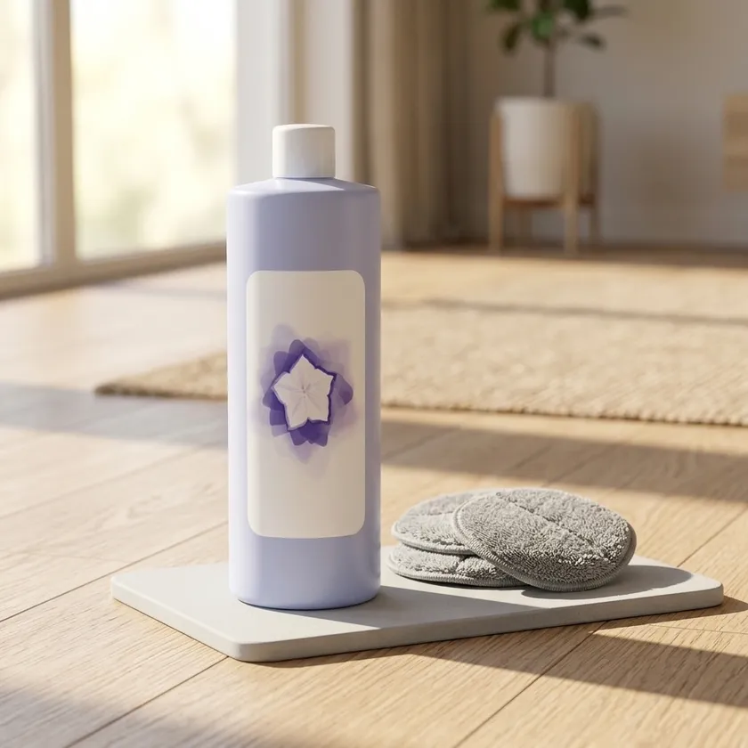

에코백스 (ECOVACS)
에코백스 디봇 T50 프로 옴니 소모품 교체 주기｜원형 걸레·필터·세제 1년 세트
글·구성: 제이상점 · 기종별 1:1 호환 실물 점검 · 교체 주기 비교표 · 스마트스토어 패키지 안내

핵심 관리 · 선택 체크포인트
- 요즘 집에서 겪기 쉬운 초슬림 본체로 침대·소파 밑 깊숙한 솜먼지까지 쓸어 담는 에코백스 디봇 T50 프로 옴니의 필터 눈막힘이 빨라지고 원형 패드가 닳기 시작하는 시점, 혹시 우리 집 로봇청소기 이야기 같으신가요?
- 에코백스 T50 프로 옴니 구매 전 꼭 짚어볼 실물 부품 디테일: 호환 소모품을 고를 때 가장 먼저 살펴야 할 핵심은 솔·고무 V자 메인브러시 + 블루 링 3암 사이드브러시와 원형 극세사 패드·전용 세제의 정밀한 체결감입니다.
- 에코백스 T50 프로 옴니 소모품 교체 주기 & 전용 규격 한눈 비교표: 앱 잔여 수명 퍼센트(%)와 함께 아래 실물 마모 신호를 대조해 보시면 교체 타이밍을 놓치지 않고 에코백스 T50 프로 옴니를 최적 상태로 유지할 수 있습니다.
- 단품 구매 vs 패키지 선택, 에코백스 T50 프로 옴니 옵션 고르는 현실 기준: 제이상점 에코백스 T50 프로 옴니 패키지는 브러시·원형 걸레·필터·더스트백에 전용 세제까지 알차게 담은 1년 세트·6개월 세트·3개월 세트로 구성되어 있습니다.
- 현재 대표 구성 기준가 75,400원대(옵션·할인 혜택에 따라 스토어 결제 화면 기준 상이)로 운영 중이니 우리 집 청소 주기와 남은 재고를 대조한 뒤 제이상점 에코백스 디봇 T50 프로 옴니 스마트스토어 상세 옵션에서 가장 실속 있는 구성을 선택해 보세요.
실물 부품 디테일 · 관리 구성 이미지



부품 규격 · 점검 기준표
| 핵심 소모품 구분 | 에코백스 T50 프로 옴니 전용 규격 특징 | 체감 교체 신호 & 권장 관리 기준 |
|---|---|---|
| V자 메인·블루 링 3암 브러시 | 엉킴 저감 V자 브러시 + 전용 3갈래 사이드브러시 | 침대·소파 다리 회전 후 브러시 모 휘어짐 및 양끝 축 먼지 점검 |
| 블랙 프레임 필터·더스트백 | 사각 워셔블 주름 필터 + 화이트 칼라 먼지봉투 | 가구 밑 솜먼지 특성상 필터 2개 교대 세척·24시간 건조 필수 |
| 원형 회전 걸레·전용 세제 | 그레이 극세사 원형 패드 쌍 + DEEBOT 클리너 | 패드 2매 동시 교체 및 전용 세제로 바닥 유분기·걸레 냄새 관리 |
💡 교체 주기가 겹치는 필터·브러시·물걸레·더스트백은 단품 배송비를 여러 번 내기보다 에코백스 T50 프로 옴니 기간별 세트(3개월·6개월·1년)로 미리 구비해 두면 물세척 후 24시간 교대 건조까지 끊김 없이 관리할 수 있습니다.
자주 묻는 질문 (FAQ)
Q. 에코백스 T80 옴니나 T90 프로 옴니 소모품 세트를 T50 프로 옴니에 써도 되나요?
A. 안 됩니다. T80·T90은 원통형 롤러 걸레와 2암 사이드브러시를 쓰는 반면, T50 프로 옴니는 원형 회전 물걸레 패드 쌍과 3암 사이드브러시 구조를 쓰므로 반드시 T50 프로 옴니 전용 세트를 주문하셔야 합니다.
Q. 소모품은 아직 남았는데 T50 프로 옴니 스테이션에 넣을 대용량 정품 세정액만 추가 구매할 수 있나요?
A. 네, 매일 물걸레 세척을 돌려 세제 소모가 빠르시다면 에코백스 디봇 정품 전용 클리너 1L (1병·2병 단품) 페이지에서 1L 1병 또는 2병 복수구매할인 옵션을 별도로 선택하실 수 있습니다.
제이상점 1:1 검수 추천 패키지 · 구매 안내
메인 추천 구성
대표 구성 참고가 75,400원대 (옵션·쿠폰별 스마트스토어 결제 화면 기준)
1년 세트6개월 세트3개월 세트
![[정품] 에코백스 세제 세정제 소모품 T90 T80 X5 X8 X11](../../assets/img/ecovacs-cleaner-product-274f99ea.webp)
☑️ 주문 전 확인해 두면 좋은 제이상점 안심 포인트
· 기종별 1:1 전용 규격 검수: 모델명·연식에 맞는 호환·정품 구성을 검수해 오주문 불안을 줄였습니다.
· 해외직배송 미리 주문 팁: 중국 구매대행·해외직배송 상품이므로 마지막 여분 1개를 꺼내 쓰는 시점에 개인통관고유부호와 함께 여유 있게 주문해 두시면 훨씬 경제적인 비용으로 끊김 없이 교체하실 수 있습니다.
· 기종별 1:1 전용 규격 검수: 모델명·연식에 맞는 호환·정품 구성을 검수해 오주문 불안을 줄였습니다.
· 해외직배송 미리 주문 팁: 중국 구매대행·해외직배송 상품이므로 마지막 여분 1개를 꺼내 쓰는 시점에 개인통관고유부호와 함께 여유 있게 주문해 두시면 훨씬 경제적인 비용으로 끊김 없이 교체하실 수 있습니다.
📖 더 많은 가정 내 사용 스토리와 상세 후기가 궁금하시다면
📱 네이버 블로그 모바일 원문 보기 ↗